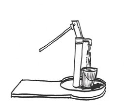

|  |
(Pour) |
Pour is a framework for Periodic, On-Demand, and User-Specified Information Reconciliation that accepts periodic information updates, collects information on-demand as needed, and accepts user-specified information while presenting a single unified view to the user. The primary functionality of Pour is exposed to the user through its query interface. A query consists of any number of XPaths, where each XPath returns a list of the XML strings that satisfy it. Depending on the XPaths specified and the contents of the Pour database, query processing may be as simple as a database lookup or as complex as a series of queries down a Pour hierarchy to a set of Pour repositories that compute the requested information on-the-fly before the appropriate results are returned. This complexity is invisible to users, who may utilize any valid XPath to retrieve results integrated from across the relevant periodic, on-demand, and user-specified sources.
New types of information and the methods used to collect them are described by "spouts". Collection methods are described by "pumps" and "drains". A pump represents pull-based information that is actively collected from external sources by Pour itself. A drain represents push-based information that is produced elsewhere before flowing into the system. Pour supports two drain types: periodic drains and user drains. Periodic drains support information that comes from a trusted source at an unknown frequency such that any previous information from the same source can be completely overwritten. Three periodic update mechanisms are available based on subscriptions to grid service data obtained by other services, keyed hashes usable by cron jobs, and embedded Java objects, which may be used to produce arbitrary information locally. User drains support information added by users, which must conform to a given XML schema.
On-demand processing, which can be disabled on a per query basis if desired, is triggered according to the pumps defined in each spout. A pump defines a set of XPath prefixes for which it has information and a set of XPath restrictions that the query XPath must satisfy. These restrictions can include specific attributes or elements that must be defined and/or specific values they must take. Pour currently provides two types of built-in pumps. The Pour pump supports hierarchical caching, which is one form of on-demand information. When invoked, this pump passes the query on to a lower level Pour instance for processing. The GRAM pump supports collection using the Globus Toolkit GRAM component. A specified executable is run on a grid host with a set of arguments derived from the query arguments. The output of this job is then collected by Pour, filtered appropriately, and returned to the user.